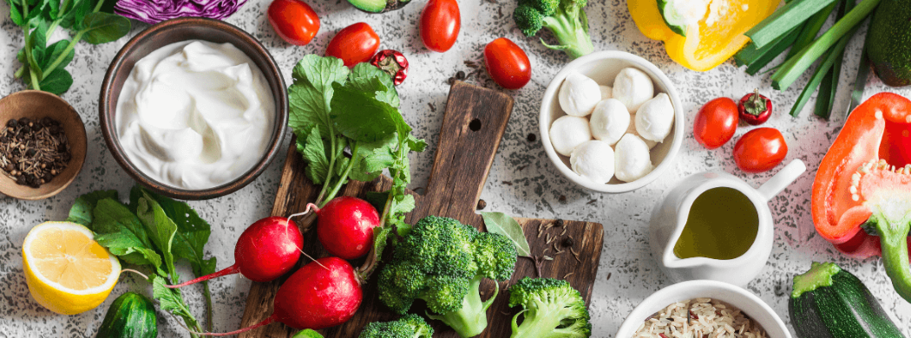
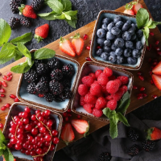
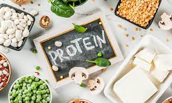
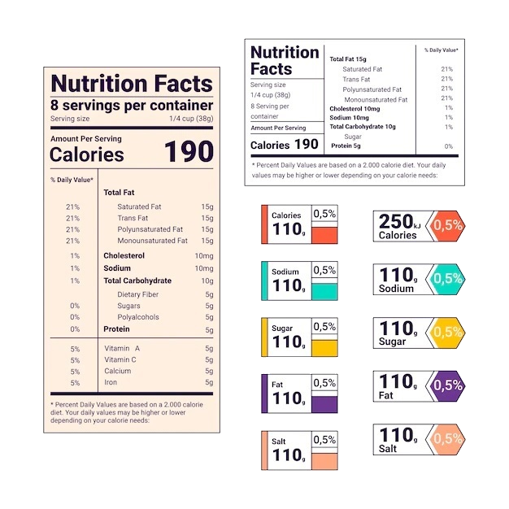

Welcome
Welcome to our nutrition website, where we are dedicated to helping you achieve optimal health
and well-being through proper nutrition. Our website is designed to provide you with the latest
and most accurate information on nutrition, healthy eating habits, and lifestyle choices.
This website provides you a tool to calculate BMI and recommends you healthy menu based on your
weight and height. We also love to share with you trending eating habits and cooking tips.
At our nutrition website, we believe that nutrition is the foundation of a healthy and fulfilling
life. That's why we are committed to providing you with the knowledge and resources you need to
make positive changes in your diet and lifestyle. We hope that our website will be a valuable
resource for you on your journey to better health, and we look forward to supporting you every
step of the way. Thank you for visiting our nutrition website, and we hope you enjoy exploring
all that it has to offer.

Trending Topics

The Health Benefits from Berries
Here are the reasons why you should add berries to your meal:
- Berries contain antioxidants that protect your cells and reduce disease risk.
- Helping to improve blood sugar levels and insulin sensitivity.
- Berries provide many nutrients.
- Berries have the very strong anti-inflammatory properties.
- Berries help to reduce cholesterol levels.
- Berries are low in calories and chock full of vitamins, nutrients, and other
good-for-you ingredients.
Related Articles:
Plant-Based Protein Advantages & Disadvantages
Pros:
- Plant-based sources can help to reduce content of harmful bacteria and keep our bodies
stay healthy.
- It helps to boost the antioxidant levels in body and prevent aging, making you look
younger.
Cons:
- Plant-based proteins are less absorbed by the body compared to animal-based proteins.
- There is a lack of B12 in plant-based sources.

Related Articles:
Understand and Know How to Use Nutrition Facts Label

There are many reasons why people look at nutrition facts table when shopping groceries.
A nutrition facts table can help you make informed food choices. We provide you brief
instruction how to read and use the table:
- First look at number of servings in the package and the serving size. In addition,
all the nutrient amounts described on the label refer to the size of the serving.
- The number of calories provide a measure how much energy you get from a serving that
is important for you to balance calories in and out each day.
- The next part shows some key nutrients that can impact your dietary needs. It includes
some nutrients you want to get more or the ones you want to limit in your meals.
- The % Daily Value (DV) tells you how much of each nutrient is in one serving of the
food compared to the recommended daily intake. It's important to note that the DV is
based on a 2,000-calorie diet, so if you consume more or less than that, your needs
may be different.
- Nutrients to Limit: The label also includes information about nutrients that you
should limit, such as saturated and trans fats, cholesterol, and sodium.
Related Articles: